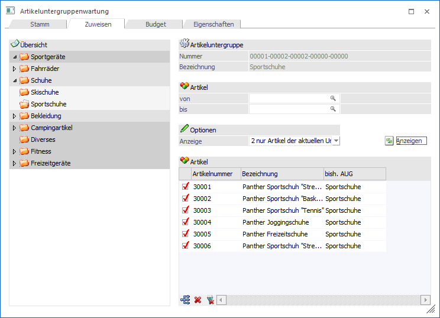
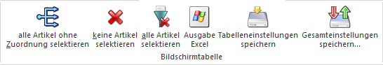

Nach Anlage der Artikeluntergruppen können die Artikel den Untergruppen zugewiesen werden. Das Zuweisen der Artikel erfolgt im Register "Zuweisen".
Wählen Sie zunächst eine Untergruppe aus, der Sie Artikeln zuordnen wollen. Die aktivierte Untergruppe wird durch den geöffneten Ordner symbolisiert.

Im rechten Teil des Fensters haben Sie zwei Anzeigefelder, die die Nummer und Bezeichnung der soeben gewählten Artikeluntergruppe zur Kontrolle anzeigen.
Ø Artikelnummer von / bis
Geben Sie die Artikelnummer von - bis ein, wenn Sie einen bestimmten Nummernkreis einer Artikeluntergruppe zuordnen wollen. Bleiben die beiden Felder leer, so wird bei der Artikelauswahl keine Einschränkung gemacht.
Optionen
Ø 0 Alle Artikel
Wird die Option "Alle Artikel" ausgewählt, werden alle Artikel aufgelistet, gleichgültig, ob sie bereits einer Artikeluntergruppe zugeordnet wurden oder nicht.
Ø 1 Alle Artikel einer anderen Untergruppe
Wird diese Option ausgewählt, werden alle Artikel aufgelistet, die bereits einer Artikeluntergruppe zugeordnet wurden; jedoch nicht der Aktuellen.
Ø 2 nur Artikel der aktuellen Untergruppe
Wird diese Option gewählt, werden alle Artikel aufgelistet, die der aktuell ausgewählten Artikeluntergruppe zugeordnet sind.
Ø Anzeigen
Nach Anwählen werden alle Artikel lt. Einschränkung aufgelistet.
Um die Artikel einer Artikeluntergruppe zuzuordnen, muss in der Tabelle die Checkbox vor dem jeweiligen Artikel aktiviert werden.
Tabellenbuttons

Ø alle Artikel ohne Zuordnung selektieren
Um alle aufgelisteten Artikel der Artikeluntergruppe zuzuordnen, wählen Sie den "Zuweisen"-Button an; dadurch werden alle aufgelisteten Artikel aktiviert, und zugeordnet.
Ø keine Artikel selektieren
Wird der "Keine"-Button angewählt, werden alle selektierten Artikel der Liste wieder deaktiviert.
Ø alle Artikel selektieren
Beim Drücken dieses Buttons werden alle Artikel in der Tabelle selektiert.
Buttons
Ø Speichern
Durch Anwählen des Speichern-Buttons, werden die Artikeluntergruppen-Zuordnungen gespeichert und die Tabelle wird wieder geleert.
Ø Ende
Durch Drücken des "Ende"-Buttons verlassen Sie die Artikeluntergruppen-Zuweisung, Änderungen werden dabei nicht gespeichert.